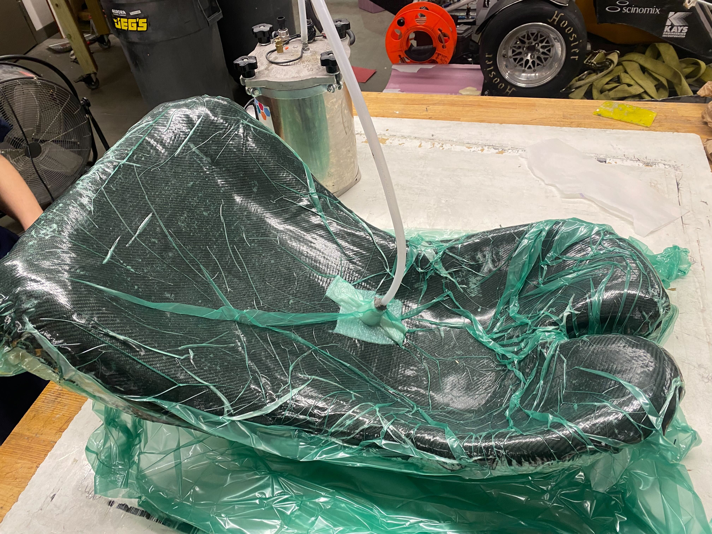
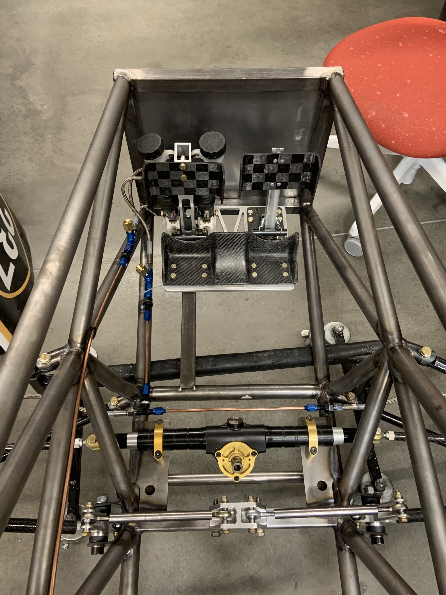
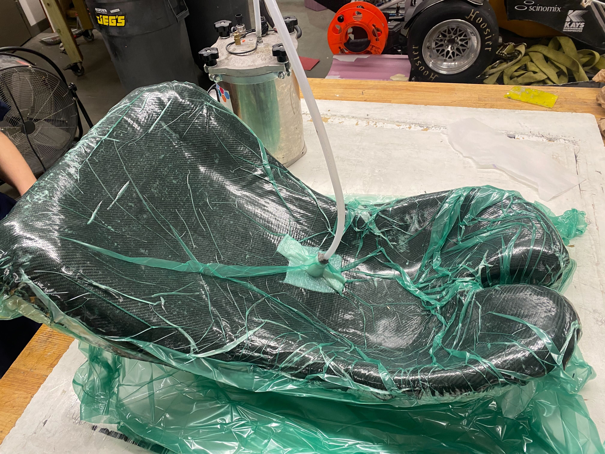
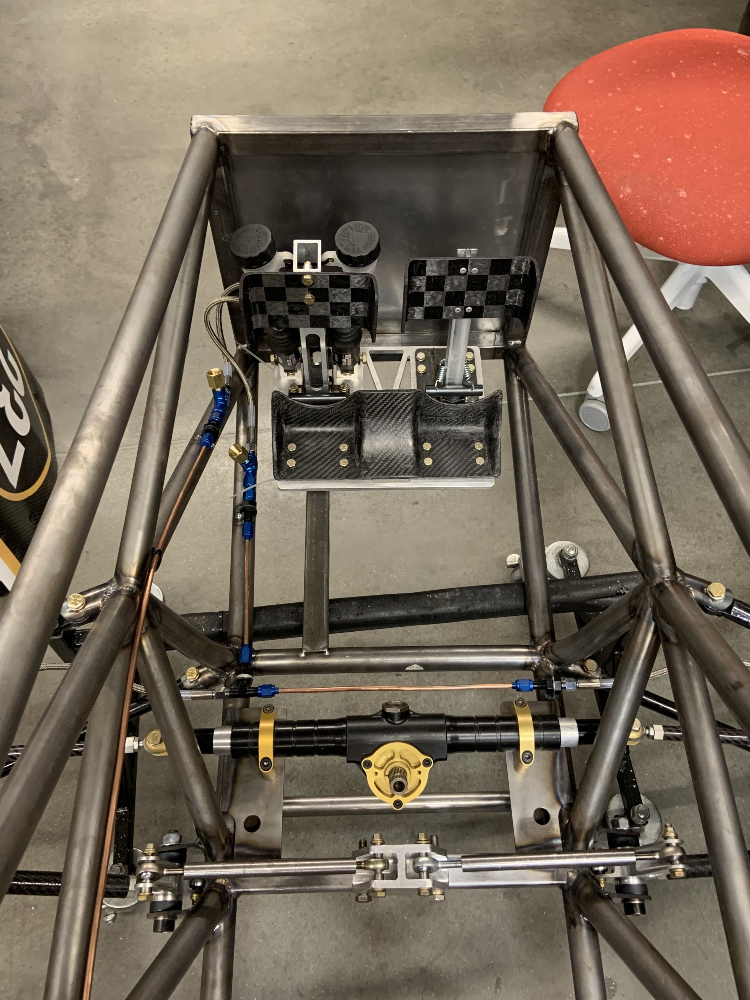
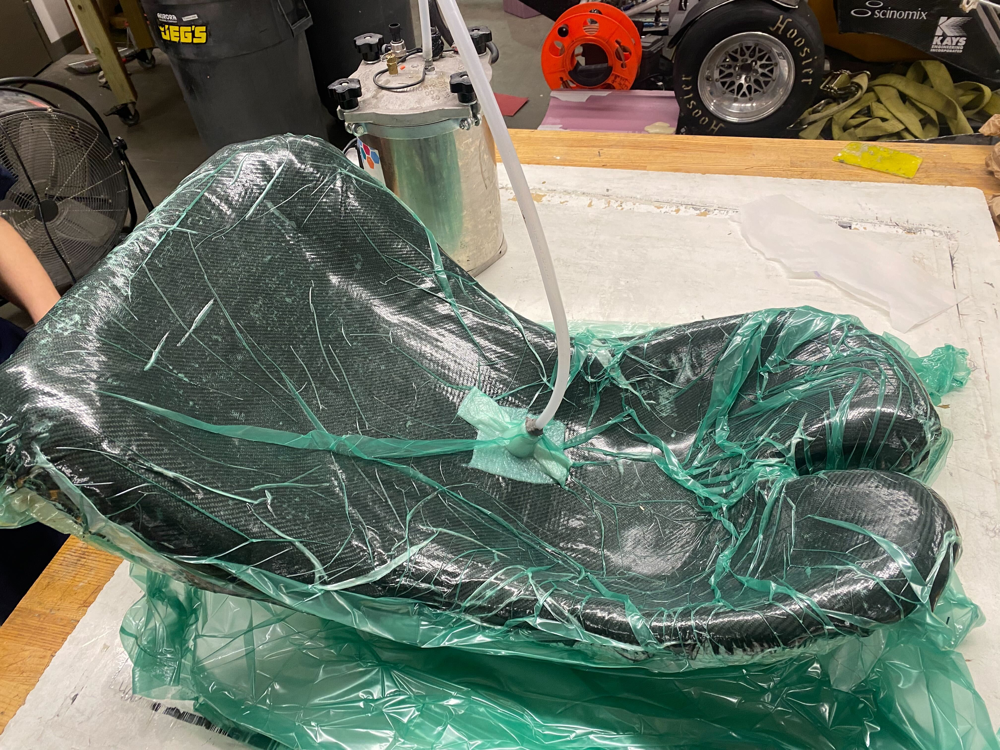
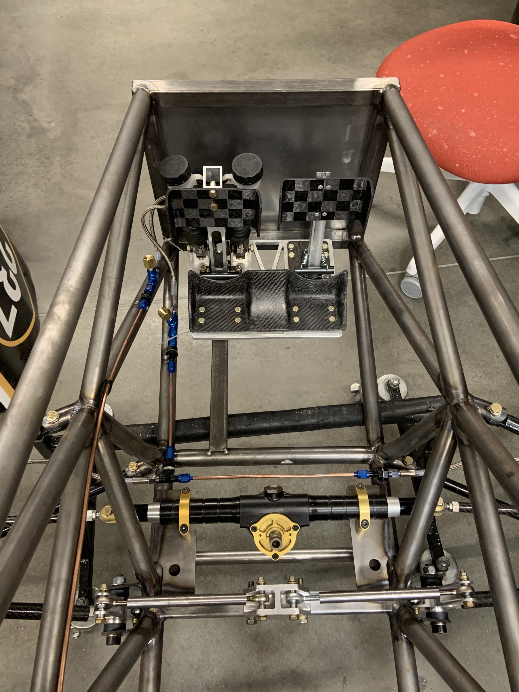

This subsystem encompasses brakes, controls, & ergonomics. We use Wilwood brake calipers with laser cut rotors. Our steering wheel has paddle shifters for sequential pneumatic shifting. Cockpit design is a new goal for this season, specifically making it more adjustable for each driver. We currently have an adjustable pedal chassis with carbon fiber foot cups.


Alex is a junior mechanical engineering student. He joined the team the fall of 2022. His main goal for this season is designing an adjustable and ergonomic cockpit. Alex is also a member of our welding team and fabricates the chassis, suspension and powertrain components.